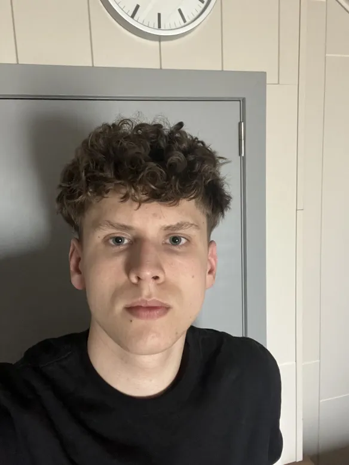

IT Student · Cloud & Cybersecurity
Welcome to my e-portfolio.
My name is Brent Schoeters, a second-year Electronics-ICT student at Thomas More Geel. I am interested in cybersecurity, ethical hacking and building secure IT solutions.

About me
Calm, social and motivated to learn.
I am a calm and social person who enjoys working together with others. I am easy to work with, reliable in group projects and I like approaching problems in a structured way.
In my free time, I play handball, which I have been doing for over seven years. I also go to the gym. These hobbies help me clear my mind, stay disciplined and work on my physical condition.
I chose this study because I have been interested in computers since I was around twelve years old. The part that interests me the most is cybersecurity: learning how systems work, how they can be attacked and how they can be protected.
In the future, I would like to become an ethical hacker and work internationally for large companies.
Projects
Projects & achievements
Click a project to open a separate detail page with more context, what I created, what I learned and which skills I used.
Hospital Navigation System
Internal navigation concept for hospitals using BLE, route calculation, accessibility and security analysis.
Open project → Ongoing 02Secure Hosting Platform
A secure hosting platform assignment with automation, deployment, procedures, security tests and performance tests.
Open project → Completed 03OO Development Project
Java theme park project focused on object-oriented programming, classes, inheritance and structured code.
Open project → Completed 04Data Essentials SQL Project
Database project with ERD design, SQL table creation, data inserts and different types of queries.
Open project →Skills
Technical and soft skills.
Technical skills
Python · Java · SQL · HTML · CSS · Docker · GitHub
Soft skills
Teamwork · Communication · Problem-solving · Discipline · Willingness to learn
Current growth
I am still improving my programming and cybersecurity knowledge through school projects and practice.
Curriculum Vitae
My CV
This section gives access to my CV page and a downloadable PDF version.
Contact
Thanks for visiting.
This portfolio gives an overview of who I am, what I have learned and where I want to grow as an IT professional.
You can contact me via email:
r1056106@student.thomasmore.be